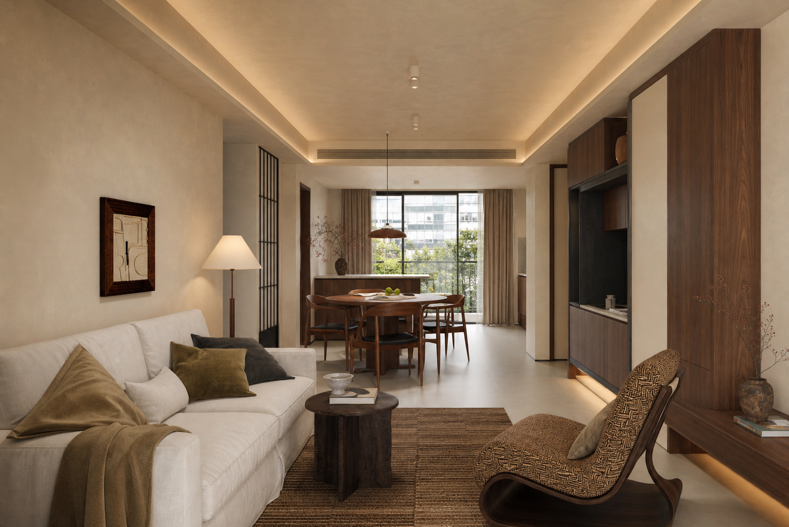
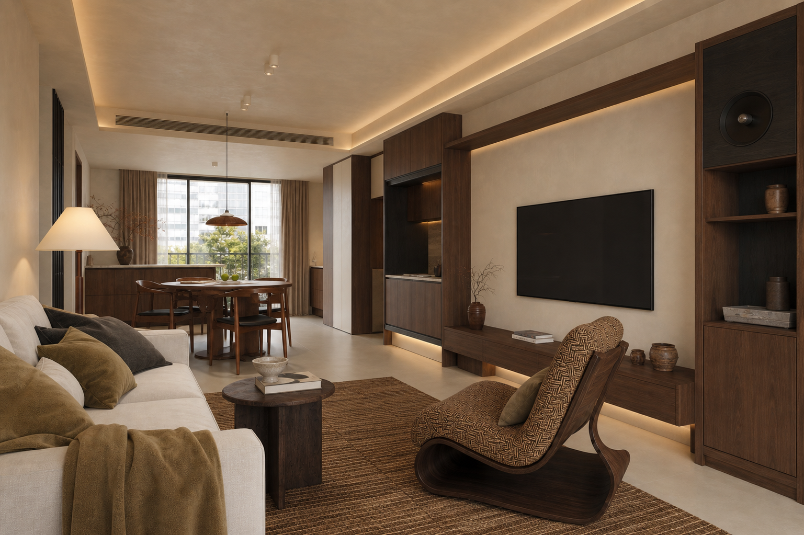
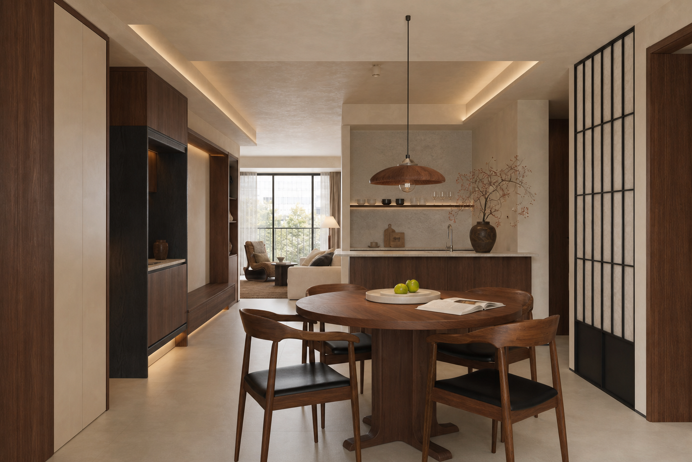
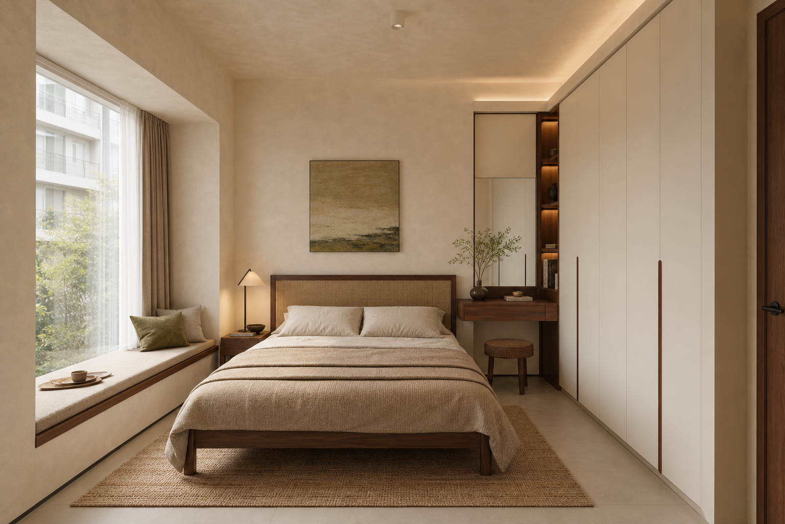

现在可以审阅空间方案

下一步需要确认需求与预算
施工下单前现场复尺与专业深化
方案速览
你会获得怎样的家
保留三间独立卧室，将主要活动集中到南侧连续公共区；厨房维持封闭防油烟，同时通过宽门洞与餐区协同。
玄关与公共区
通顶柜吸收鞋、外套、清洁工具和影音设备，柜体端部形成进门视觉缓冲。
确认方式：门扇开启、弱电箱和扫地机器人位置复尺餐厨
餐桌作为备餐与家庭活动中心，厨房保持 U 形工作面并预留冰箱散热。
确认方式：设备型号、烟道和燃气条件复核卧室区
主卧保持对称睡眠面，儿童房用标准单人床和独立书桌支持成长变化。
确认方式：床垫、书桌和衣柜成品尺寸确认空间设计
先感受空间，再看细节
重点查看比例、动线、收纳位置和光线关系。柜体分格、灯位和设备尺寸会在确认需求后继续深化。



在线图纸
六类设计图纸，解决六种不同问题
每张图只表达一个专业主题，避免把同一张底图换颜色冒充不同图纸。可滚轮缩放、拖动查看，确认后仍可回到对应图纸修改。
{kind=link}
蓝色表示门窗或给排水，橙色表示门扇或电气点位。图中尺寸单位为毫米。
从草图到最终漫游
先确认 3D 设计，再逐张生成实景
3D 草图用于修改空间关系和相机；确认后，Imagegen 按设计稿一次生成一张照片级实景全景图。每张实景图单独确认，全部通过后才组装 krpano 漫游。
材料与灯光
让家保持温暖、耐看和好维护
客厅用反射环境光配合阅读灯，餐桌使用可控光束吊灯，走道采用低位夜间照明。
哑光浅橡木地板
低光泽、耐磨、适合地暖的稳定基材
确认：以实样、批次和含水率为准
暖白矿物涂料
低 VOC、可局部修补的哑光体系
确认：先做 1㎡ 现场样板
中浅胡桃木饰面
直纹、低反射、统一封边色
确认：板材环保等级、封边和五金另行确认
灰绿耐磨织物
可拆洗、耐摩擦
确认：以成品样卡为准
预算参考
先看投入范围，再决定取舍
硬装、定制与主材按 32-42 万元概念范围控制
当前概念投入区间¥320,000–¥440,000
基础施工与机电概念面积与常规翻新范围
¥110,000–¥145,000定制柜体约 25-32 延米，未含特殊五金
¥80,000–¥115,000主材与灯具中端耐用品质区间
¥75,000–¥105,000家具软装与预备金核心家具与约 10% 风险预备
¥55,000–¥75,000本轮共识
这些需求已经进入方案
它们是本轮需要保留的设计前提。若你的生活方式或优先级发生变化，告诉 Agent 后会重新调整相关空间。
客餐厅保持连续采光和不少于 900mm 的主要通行净宽。
平面净距与现场复尺
玄关具备鞋、外套、清洁工具和临时置物。
柜体深化
厨房按储藏、清洗、备餐、烹饪顺序组织。
设备型号与台面复尺
儿童房同时容纳睡眠、学习和可调整储物。
家具尺寸复核
公共区避免单一主灯和直射屏幕的高眩光。
灯具配光与现场调试
下一步
这些决定需要你确认
你只需要确认生活方式和投入选择；尺寸、结构与工程问题由相应专业人员负责。
请业主确认
- 当前没有待确认的业主事项。
交给专业人员
- 全部墙体、洞口、梁柱和完成面尺寸需现场复尺。施工深化和定制下单前
- 烟道、立管、地漏、配电容量和原有回路尚未核实。水电施工前
- 拆改边界和承重属性必须以原始结构图及专业意见为准。任何拆改前
- 卫生间防水、排水坡度和闭水试验由施工与监理确认。贴砖前
当前方案可以用于确认空间方向、材料气质和投入范围；不能直接用于施工或定制下单。进入下一阶段前，必须完成现场复尺和相应专业复核。